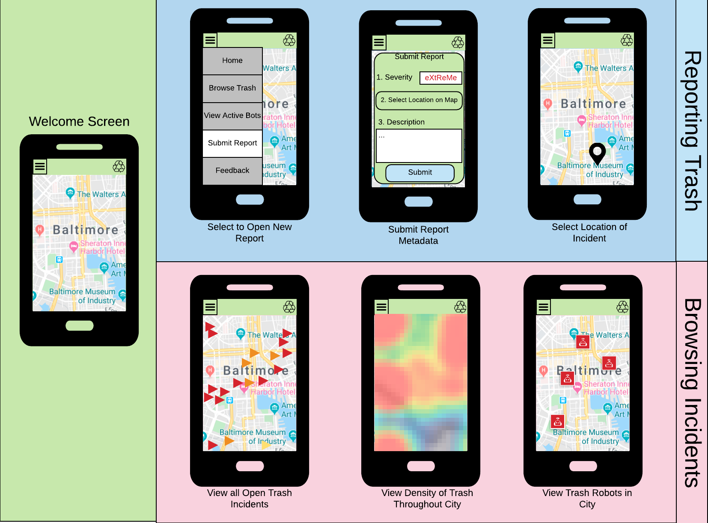

Ideas
- Mr. Land Trash Robot
- Trash Collection Application
- Plastic Biodegredation
Mr. Baby Land Trash Wheels
Even a Super Hero Needs Friends
Mr. Baby Land Trash Wheel Details
- Robots connected to centralized hub
- Largely automated, though require supervision if they get stuck
- Civilians inspired to litter less
- Potential Data Sources: Mr. Trash Wheel Data, KiwiBots
Trash Collection Application

Trash Collection Application Details
- Automated Reporting Service for major trash incidents
- Browse trash hot spots for social services
- Potential integration with trash robots
- Optimize trash pickup by creating public service sanitation team that cleans up
- Potential Data Sources: TrashOut, Baltimore 311 Service Data
Plastic Biodegredation
Feed bacteria your unwanted garbage
Trash Collection Application Details
- Waste disposal facility with bacteria that degrade waste
- Decompose components of waste that can typically only be left at landfill
- Requires careful disposal of plastics
- Facilities do not yet exist
- Potential Data Sources: Article in Science